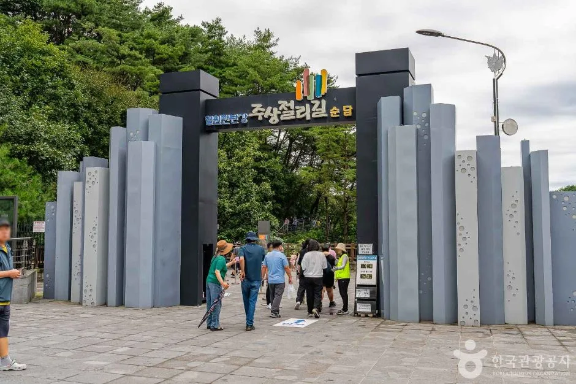
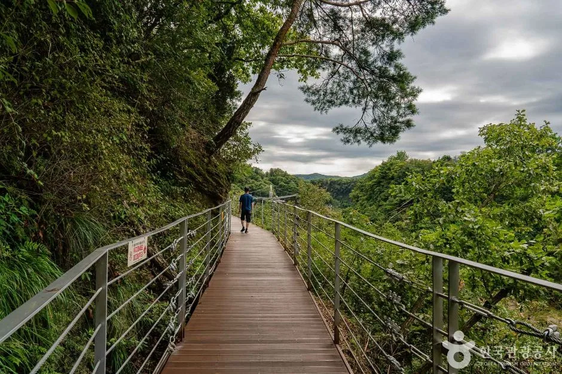
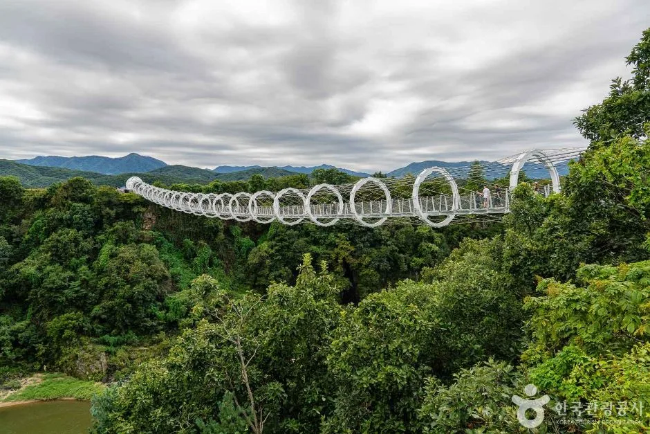
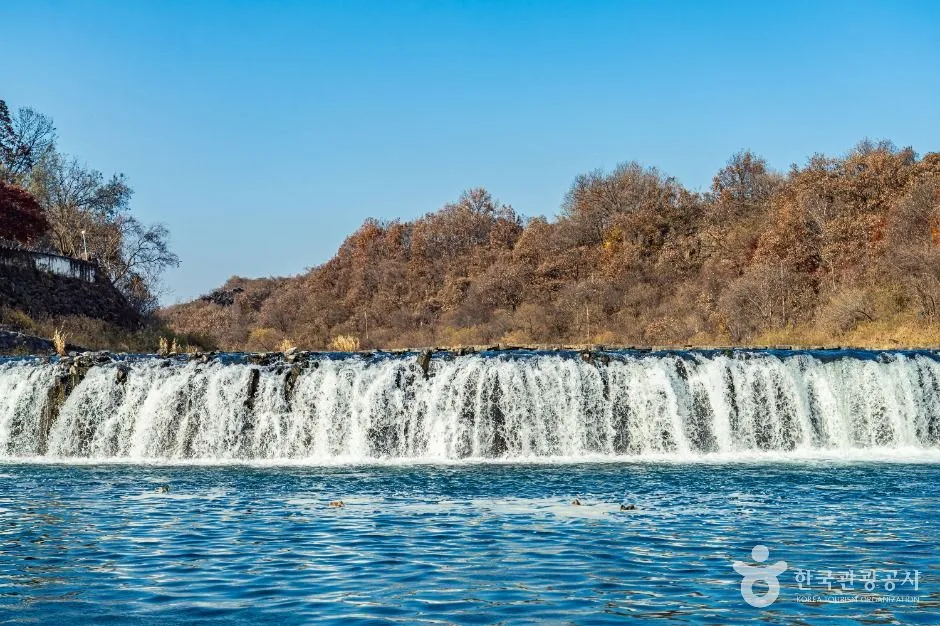
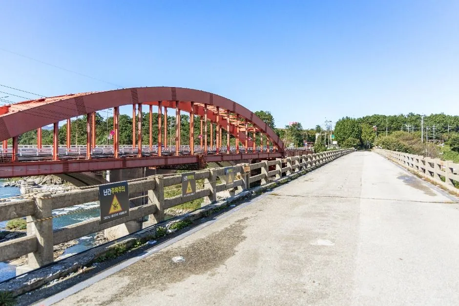
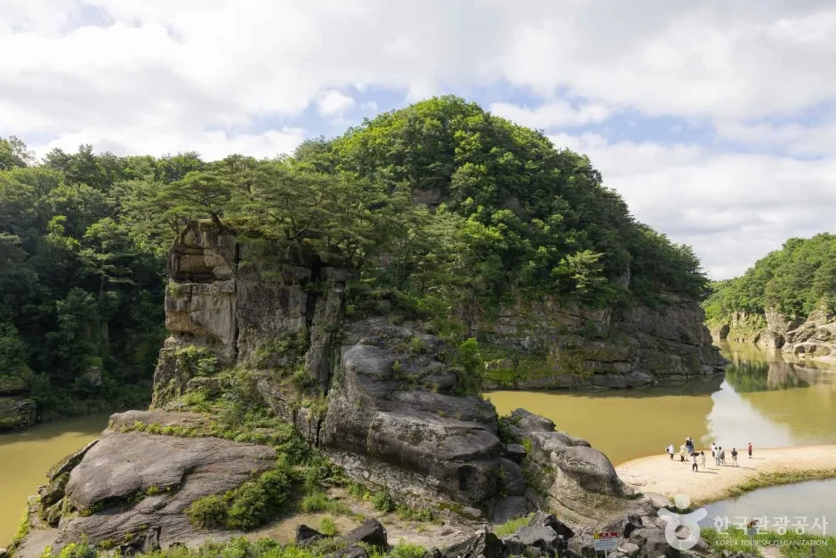
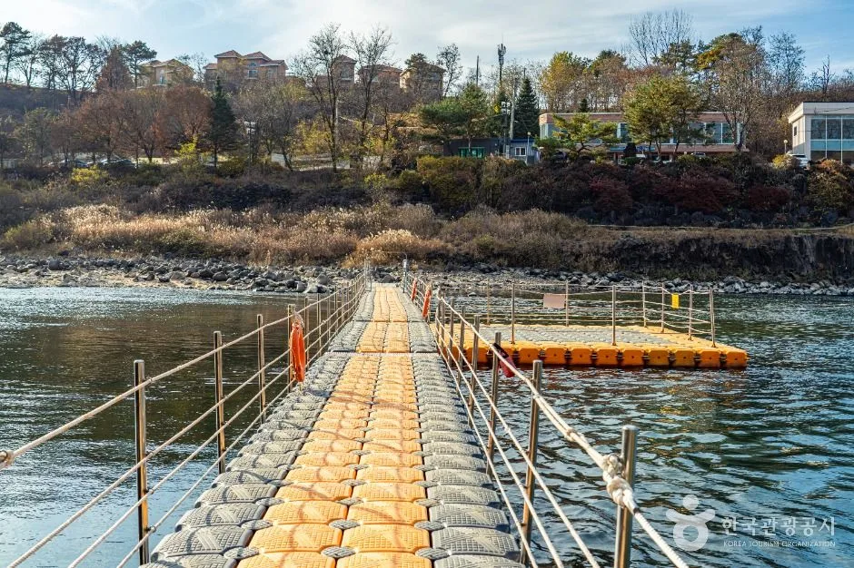
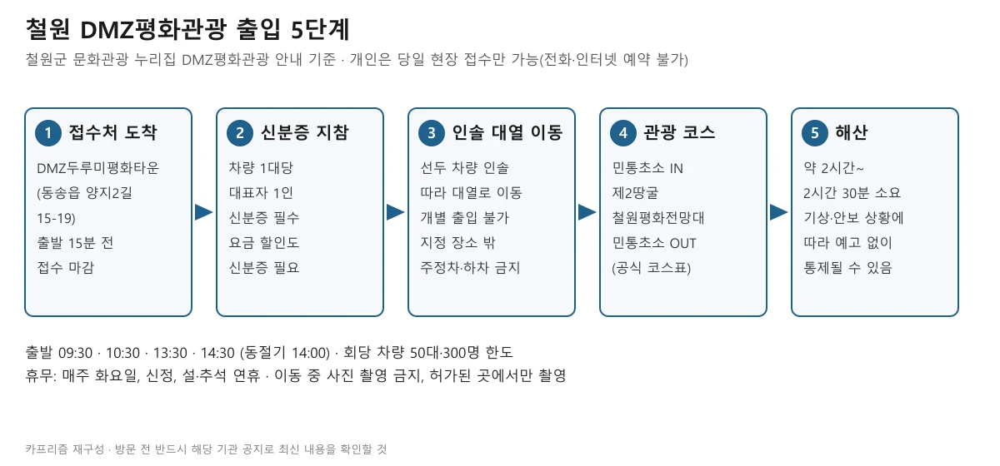
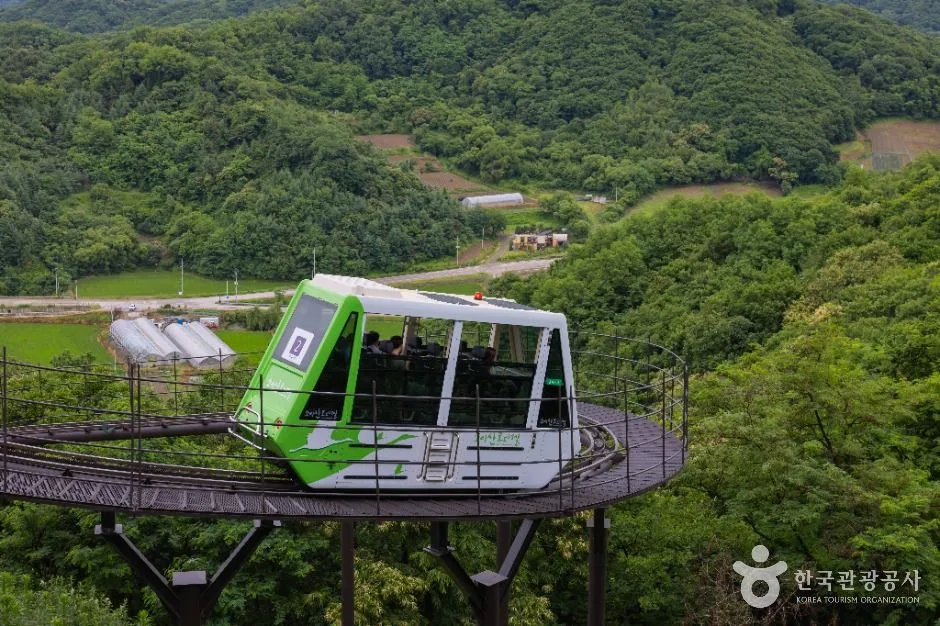
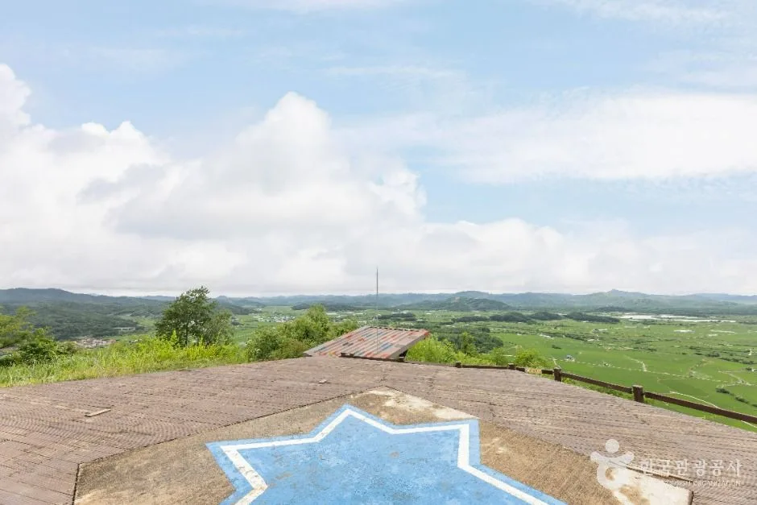

▲ 숲 절벽 사이로 흐르는 한탄강. 촬영 장소와 시기는 확인하지 못했다. 사진=한국관광공사
"차 한 대에 신분증 한 장, 회당 50대 선착순." 철원군 문화관광 누리집이 DMZ평화관광을 안내하는 방식이다. 개인은 전화나 인터넷으로 예약할 수 없고 당일 현장에서만 접수하며, 차량 1대당 대표자 1인의 신분증이 필요하다. 같은 철원에서 한탄강 협곡 절벽에 매단 길이 3.6km의 주상절리길(잔도)은 입장권만 사면 들어간다. 이 글은 철원군 문화관광 누리집, 한국관광공사 TourAPI·대한민국 구석구석을 2026년 10월 8일에 직접 열어 확인한 값만 정리했고, 자료끼리 다르거나 확인하지 못한 항목은 그대로 표시했다. 고석정 꽃밭은 이미 다룬 기사가 있어 여기서는 접경 출입 절차와 한탄강 협곡 구간에 무게를 뒀다.
💡 먼저 알아둘 세 가지
① 화요일은 통째로 비는 날이다. DMZ평화관광(매주 화요일 휴무), 한탄강 주상절리길(매주 화요일 휴무), 소이산 모노레일(화요일 휴무)이 모두 같은 요일에 쉰다. 철원 일정은 화요일을 빼고 짜야 한다.
② 접경 코스는 개별 출입이 안 된다. 선두 차량의 인솔에 따라 대열로 이동하고, 이동 중 사진 촬영은 금지다. 기상이나 안보 상황에 따라 예고 없이 통제될 수 있다고 공식 안내에 적혀 있다.
③ 주상절리길 운영 시간은 자료마다 다르다. 철원군 안내는 09:00~17:30(16시 입장 마감)이고 관광공사 자료는 3~11월 입장 마감이 16:00로 같지만 닫는 시각 표기가 다르다. 10월에 가는 사람이라면 16시까지 입장이 공통 기준이다.
1. 한눈에 보기 — 철원 명소별 개방·요금·출입 방법
| 명소 | 개방 시간·휴무 | 요금 | 출입·예약 | 확인 출처 |
|---|---|---|---|---|
| 한탄강 주상절리길(잔도) 3.6km | 09:00~17:30, 16시 입장 마감. 매주 화요일·1월 1일·설·추석 당일 휴무(길이 3.6km·폭 1.5m는 철원군 안내) | 성인 10,000원(철원사랑상품권 5,000원 지급), 소인 4,000원(2,000원 지급) | 순담매표소·드르니매표소에서 현장 구매, 예약 없음 | 철원군 문화관광 누리집, 대한민국 구석구석 |
| 직탕~순담 8.5km 개방 구간(물윗길 카드와 같은 페이지, 소속 불명확) | 운영기간 '매년 10월~익년 3월 31일', 매주 화요일 휴무 | 철원군 표 기준 성인 10,000원, 소인 4,000원(상품권 교환 5,000원/2,000원) | 매표소 5곳(태봉대교·은하수교·승일교·고석정·순담) | 철원군 문화관광 누리집 |
| 직탕폭포 | 상시 개방, 연중무휴 | 입장료 항목 없음 | 제한 없음(공식 정보에 출입 절차 없음) | TourAPI(한탄강지질공원 자료) |
| 승일교 | 상시 개방, 연중무휴 | 입장료 항목 없음 | 제한 없음, 주차 가능 | TourAPI |
| 고석정 국민관광지 | 상시 개방, 연중무휴 | 입장료 항목 없음(꽃밭은 별도 운영) | 제한 없음, 주차 가능 | TourAPI |
| 순담계곡 | 상시 이용 가능, 연중무휴 | 입장료 항목 없음 | 제한 없음, 주차 가능 | 철원군 문화관광 누리집, TourAPI |
| 소이산 모노레일 | 3~11월 09:00~18:00(탑승 마감 17:00, TourAPI는 16:55로 표기), 화요일 휴무 | 성인 7,000원(상품권 3,000원 지급), 청소년·어린이 4,000원(2,000원 지급) | 철원역사문화공원 내 철원역 출발 | 대한민국 구석구석(2026년 8월 갱신 표기) |
| DMZ평화관광(제2땅굴·철원평화전망대) | 출발 09:30·10:30·13:30·14:30(동절기 14:00), 출발 15분 전 접수 마감. 화요일·신정·설·추석 연휴 휴무(TourAPI에는 어린이날도 휴무로 표기) | 어른 개인 4,000원(관광공사 정보 기준, 아래 설명 참고) | 개인 당일 현장 접수만, 차량 대표자 신분증 필수 | 철원군 문화관광 누리집, TourAPI |
직탕폭포·승일교·고석정·순담계곡은 공식 정보에 개방 시간이 '상시', 휴무가 '연중무휴'로만 적혀 있다. 시설 점검이나 호우 때 접근이 막히는지는 공식 정보에서 확인하지 못했으니 현장 상황은 철원관광정보센터(033-450-5558)로 물어보는 편이 안전하다.

▲ 한탄강 주상절리길 입구 쪽. 촬영 시기는 확인하지 못했다. 사진=한국관광공사
2. 한탄강 주상절리길 — 3.6km, 어느 게이트에서 출발하나
한국관광공사 정보에 따르면 이 길은 사람이 접근할 수 없던 수직 절벽 중간에 설치한 잔도로, 수면에서 20~30m 높이의 절벽에 매달려 물줄기를 따라 이어진다. 총 길이는 3.6km, 편도 약 1시간 30분이 걸리고 전망 쉼터는 10곳이다. 출발은 순담 게이트와 드르니 게이트 중 고를 수 있다.
| 구분 | 순담 게이트(순담매표소) | 드르니 게이트(드르니매표소) |
|---|---|---|
| 문의 전화 | 0507-1431-2225 | 0507-1374-9825 |
| 매표소 주소 | 철원군 갈말읍 군탄리 산 78-2 | 철원군 갈말읍 군탄리 산 174-3 |
| 출발 시 특징 | 오르막 계단이 많다고 소개됨 | 초반이 내리막 계단 위주로 수월하다고 소개되며 많은 사람이 이쪽에서 출발 |
| 그 밖의 안내 | 스카이 전망대(원형 스카이워크)가 약 200m, 약 1.5km 지점으로 소개됨 | 드르니 게이트를 지나 몇 걸음이면 한탄강 협곡 풍경이 보인다고 소개됨 |
⏰ 운영 시간 — 자료마다 다르다
철원군 문화관광 누리집은 이용 시간을 09:00~17:30(16시 입장 마감)으로 적었다. 한국관광공사 TourAPI에는 하절기(3~11월) 09:00~16:00, 동절기(12~2월) 09:00~15:00으로 나온다. 대한민국 구석구석 여행기사는 3~11월 09:00~18:00(입장 마감 16:00), 12~2월 09:00~17:00(입장 마감 15:00)으로 소개했다. 입장 마감이 10월 기준 16:00이라는 점은 세 자료가 같다. 호우주의보가 발효되면 운영이 중단된다는 표기가 TourAPI에 있다. 철원군 주상절리길 안내 바로가기
주말과 공휴일에는 무료 셔틀버스가 두 매표소 사이를 30분 간격으로 오간다고 관광공사 여행기사와 철원군 안내에 나온다. 평일 운행은 공식 정보에서 확인하지 못했다. 편도로 걷고 돌아올 계획이라면 평일에는 이동 수단을 따로 생각해야 한다는 뜻이다. 걷는 구간 중에는 은하수교(연장 180m, 폭 3m, 1주탑 비대칭 현수교)가 철원군 안내에 소개돼 있다.

▲ 협곡 옆으로 이어진 보행 데크 길. 철제 난간이 이어진 구간이다. 사진=한국관광공사

▲ 협곡 위에 놓인 원형 보행 구조물. 스카이 전망대 구간으로 소개된 곳과 같은 시설로 보이지만 촬영 위치는 확인하지 못했다. 사진=한국관광공사
3. 직탕폭포·승일교·고석정·순담계곡 — 입장권 없이 보는 곳
한탄강지질공원 자료를 인용한 TourAPI 설명에 따르면 직탕폭포는 높이 약 3m, 너비 약 80m로 하천면을 따라 넓게 펼쳐진 폭포다. 현무암의 주상절리를 따라 암석이 떨어져 나가 계단 모양이 됐고, 암석은 약 54만~12만 년 전 용암이 굳은 것으로 추정된다. 문의는 한탄강지질공원 방문자센터(033-450-4810)다.

▲ 폭이 넓게 펼쳐진 직탕폭포. 수량이 많은 날인지는 알 수 없다. 사진=한국관광공사
고석정의 고석은 한탄강 협곡 안에 선 높이 약 15m의 화강암 바위다. 같은 설명에 따르면 철원 땅이 용암으로 덮이기 전에 있던 약 1억 1천만 년 전(백악기 중기)의 화강암이다. 승일교는 1948년 북한 정권이 공사를 시작했다가 6·25전쟁으로 중단됐고, 대한민국 정부가 이어받아 1958년에 완공한 교량으로 소개된다. 교량 중앙을 기준으로 남·북측의 시공 방식과 구조가 다르다고 한다. 철원군청 문화유산팀(033-450-5520)이 문의처로 나와 있다. 순담계곡은 한탄강 지류에 있는 협곡으로, 순담계곡 일대 문의는 033-450-5365다.
| 명소 | 주소 | 주차 | 문의 |
|---|---|---|---|
| 고석정 국민관광지 | 동송읍 태봉로 1825 | 가능 | 033-450-5558 |
| 직탕폭포 | 동송읍 장흥리 | 공식 정보에 주차 항목 없음 | 방문자센터 033-450-4810 |
| 승일교 | 갈말읍 내대리 | 가능 | 철원군청 문화유산팀 033-450-5520 |
| 순담계곡 | 갈말읍 순담길 143-3 | 가능 | 033-450-5365 |

▲ 붉은 아치가 보이는 다리 위 도로. 승일교로 소개된 사진이며 촬영 시기는 확인하지 못했다. 사진=한국관광공사

▲ 한탄강 협곡의 고석. 정확한 촬영 시기는 확인하지 못했다. 사진=한국관광공사
4. 한탄강 물윗길·직탕~순담 8.5km — 10월부터라는 운영 틀, 올해 개방일은 확인 못 했다
철원군 문화관광 누리집의 한탄강 안내 페이지에는 '운영기간 매년 10월~익년 3월 31일'로 시작하는 안내 블록이 있고, 개방 코스는 직탕-태봉대교-송대소-승일교-고석정-순담 구간 8.5km다. 매표소는 5곳(태봉대교·은하수교·승일교·고석정·순담), 휴무는 매주 화요일이며 주말·공휴일에는 30분 간격 셔틀버스가 다닌다. 요금은 성인 10,000원·소인 4,000원이고 입장료의 50%는 철원사랑상품권으로 바꿔 철원 안 어디서나 쓸 수 있다고 한다. 다만 이 블록이 제목 없이 놓여 있어 물윗길 카드와 주상절리길 카드 중 어느 쪽 안내인지 페이지만으로는 확정할 수 없다. 물윗길 카드 자체에는 봄·가을 야생화와 화산절경을 부교길에서 즐기는 생태관광 프로그램이라는 소개와 소요 시간 약 3시간, 매주 화요일 휴무만 적혀 있고 요금·운영기간은 없다. 주상절리길의 10,000원·4,000원은 대한민국 구석구석 자료로 따로 확인된 값이다.
⚠ 2026년 가을 개방일은 공식 자료로 확인하지 못했다. 누리집의 '10월~' 표기는 연간 운영기간 틀일 뿐 올해 정확한 개장 날짜는 나와 있지 않다. 개방 시기에 따라 셔틀버스 운행도 달라질 수 있다고 안내돼 있으니, 물윗길을 목적으로 간다면 출발 전 관광안내(033-455-7072, 철원문화재단)에 개방 여부를 먼저 확인하자. 철원군 한탄강 안내 바로가기

▲ 강 위에 놓인 부교길. 물윗길의 부교와 같은 형태의 시설로 보이지만, 정확한 구간과 촬영 시기는 확인하지 못했다. 사진=한국관광공사
5. DMZ평화관광 — 출입 절차 체크리스트
철원군 문화관광 누리집의 DMZ평화관광 안내에 따르면 코스는 접수·출발 → 민통초소 IN → 제2땅굴 → 철원평화전망대 → 민통초소 OUT → 해산 순이고 약 2시간~2시간 30분이 걸린다. 접수처는 DMZ두루미평화타운(동송읍 양지2길 15-19)이다. 한국관광공사 정보에는 월정리역이 코스 중간에 소개돼 있고 TourAPI의 월정리역 자료에도 철원군이 안보관광코스로 운영한다고 적혀 있지만 철원군 코스표에는 없어서, 월정리역이 이번 코스에 들어가는지는 확인하지 못했다. 동절기 14:00 출발이 적용되는 달도 철원군 안내에는 나와 있지 않다(TourAPI 월정리역 자료는 11~2월로 표기).

▲ 철원 DMZ평화관광 출입 5단계 도표. 철원군 문화관광 누리집 안내를 카프리즘이 재구성했다. 도표=CarPrism
✅ DMZ평화관광 출입 체크리스트(철원군 누리집 확인 항목)
· 개인은 당일 현장 접수만 가능, 전화·인터넷 예약 불가. 단체는 사전 문의 필수, 당일 접수 불가(20명 이상 유료 관광객 단체 할인)
· 차량 1대당 대표자 1인의 신분증 지참 필수, 요금 할인을 받을 때도 신분증 필요
· 출발 09:30·10:30·13:30·14:30(동절기 14:00), 출발 15분 전 접수 마감, 신청 인원이 많으면 조기 마감
· 회당 차량 50대·인원 300명 한도, 선두 차량 인솔에 따라 대열 이동, 개별 출입 불가
· 지정 장소 밖 주정차·하차 금지, 인솔자·군 안내병사 지시 준수
· 이동 중 사진 촬영 금지, 허가된 곳에서만 촬영. 총기류·위험물·캠코더·망원렌즈·주류·낚시도구 휴대 불가
· 제2땅굴·평화전망대 등 일부 건물은 반려동물 입장 제한
· 기상·안보 상황에 따라 예고 없이 통제될 수 있음. 휴무는 화요일·신정·설·추석 연휴(TourAPI에는 어린이날도 휴무로 표기돼 있어 해당 날짜는 접수처에 확인)
💰 요금은 표가 헷갈린다 — 이렇게 읽었다
철원군 누리집의 요금표는 칸 구분이 명확하지 않아 숫자만 나열돼 있다. 한국관광공사 TourAPI(철원 평화전망대 정보, 2026년 2월 수정 표기)에는 입장료(제2땅굴·평화전망대·월정리역)가 어른 개인 4,000원·단체 3,000원·군민 2,000원, 청소년·군인 3,000원/2,000원/1,500원, 어린이 2,000원/1,500원/1,000원으로 정리돼 있다. 철원평화전망대의 모노레일은 별도로 어른 개인 2,000원(청소년·군인 1,500원, 어린이 1,000원)이고, 주차는 소형 2,000원·대형 5,000원이다. 철원군 누리집은 평화전망대를 걸어서 올라갈 수도 있다고 안내한다. 65세 이상 50% 할인, 국가유공자·장애인·다자녀(3명)·병역명문가는 할인 또는 면제 대상이다. 접수처 문의는 033-450-5559, 033-452-9989다. DMZ평화관광 안내 바로가기
같은 군사지역이라도 개별 관람이 되는 곳이 있다. 철원군 안내와 관광공사 자료를 종합하면 제2땅굴·철원평화전망대는 이 관광 신청을 거쳐야 하는 곳이고, 노동당사는 TourAPI(2025년 12월 수정 표기)에 '상시 개방·연중무휴·주차 가능'으로 올라 있고 문의는 철원군청 문화유산팀 033-450-5520이다. 같은 자료에 철원군이 안보관광코스로 운영한다고 적혀 있다. 다만 노동당사 관람 제한 여부는 공식 최신 공지를 확인하지 못해 다루지 않았다.
6. 소이산 모노레일 — 철원평야를 내려다보는 선택지
소이산 모노레일은 철원역사문화공원(철원읍 금강산로 262) 안 철원역에서 출발해 소이산 전망대 인근까지 오르는 왕복 약 1.8km 구간이다. TourAPI 설명에 따르면 8인승 차량으로 운행하고, 36개월 미만 유아와 임산부는 탑승할 수 없으며 기상특보나 강풍·폭우 때 운행이 제한될 수 있다. 대한민국 구석구석 여행기사(2026년 8월 갱신 표기)에는 3~11월 09:00~18:00(탑승 마감 17:00), 12~2월 09:00~17:00(탑승 마감 16:00), 화요일·1월 1일·설·추석 당일 휴무로 나온다. 소이산(산 자체) 항목의 주차는 TourAPI에 '불가능'이지만 소이산 모노레일 항목에는 '가능'으로 적혀 있다. 모노레일 TourAPI는 하절기 탑승 마감을 16:55로 적어 구석구석 자료(17:00)와 5분 차이가 나므로 늦은 시간에는 여유를 두는 편이 안전하다. 공원 주차장 요금·대수는 공식 자료에서 확인하지 못했다.

▲ 소이산 모노레일 차량. 촬영 시기는 확인하지 못했다. 사진=한국관광공사

▲ 소이산 쪽에서 내려다본 철원평야로 소개된 풍경. 촬영 시기와 정확한 위치는 확인하지 못했다. 사진=한국관광공사
7. 하루 동선 짜기 — 공식 시간표로 계산한 한계
공식 자료에서 확인되는 숫자만으로 맞춰 본 순서다. 명소 간 이동 시간과 도로 사정은 이번 조사에서 공식 자료로 확인하지 못했으니 아래 계산에 넣지 않았다.
| 순서 | 일정 | 공식 근거 |
|---|---|---|
| 오전 | DMZ평화관광 09:30 회차(접수 마감 09:15) → 약 2시간~2시간 30분 소요이므로 이르면 낮 12시 안팎 종료 | 출발 시간·소요 시간은 철원군 안내. 종료 시각은 단순 합산 |
| 오후 | 주상절리길 입장 마감 16:00 안에 게이트 입장, 편도 약 1시간 30분 | 입장 마감·소요 시간은 철원군·관광공사 자료 |
| 선택 | 직탕폭포·승일교·고석정은 상시 개방이라 시간 제약이 적음 | TourAPI '상시 개방' |
| 피할 요일 | 화요일(DMZ평화관광·주상절리길·모노레일 모두 휴무) | 각 시설 공식 안내 |
오후 DMZ 회차(13:30·14:30)를 고르면 주상절리길을 같은 날 넣기 어렵다는 점도 시간표만으로 알 수 있다. 14:30 회차는 끝나는 시각이 이미 입장 마감 16:00을 넘길 수 있기 때문이다. 일정이 빠듯하면 하루에 한 곳만 깊게 보는 편이 낫다.
8. 계절 주의사항 — 호우·동절기·통제
- 호우주의보: 주상절리길은 호우주의보가 발효되면 운영이 중단된다고 TourAPI에 표기돼 있다.
- 동절기(12~2월): 주상절리길 입장 마감이 15:00으로 앞당겨진다고 관광공사 자료에 나온다. DMZ평화관광은 동절기 출발 시간이 14:00으로 바뀐다고 철원군 누리집에 적혀 있다.
- 물윗길: 매년 10월부터 이듬해 3월 31일까지가 운영기간이다. 올해 개방일은 확인하지 못했다.
- 접경 통제: DMZ평화관광은 기상이나 안보 상황에 따라 예고 없이 통제될 수 있다. 안내 날짜가 표기돼 있지 않은 철원군 안내 페이지이므로 출발 전 접수처(033-450-5559)에 운영 여부를 확인하는 편이 좋다.
- 꽃밭 일정: 고석정 꽃밭은 운영 기간이 매년 다르다고 TourAPI에 표기돼 있다. 올해 일정은 고석정 꽃밭 기사에서 따로 확인했다.
9. 같은 접경 지역 코스 — 이미 다룬 기사
철원에서 한탄강 상류 쪽 구간을 봤다면 하류 쪽 구간과 접경 지역 코스는 이미 발행된 기사로 이어 볼 수 있다. 포천 한탄강은 한글날 연휴 포천 한탄강 가든페스타 기사, 연천의 협곡 폭포는 연천 재인폭포 기사, 민통선 검문소가 없는 연천 호로고루는 호로고루 기사에서 다뤘다. 신분증이 필요한 동쪽 접경 코스는 고성 통일전망대·화진포 기사, DMZ 코앞 공원은 파주 임진각 기사를 참고하면 된다. 철원 안에서 꽃밭과 고석정 일대를 더 보고 싶다면 앞서 링크한 고석정 꽃밭 기사가 있다.
✅ 출발 전 체크리스트
· 화요일은 DMZ평화관광·주상절리길·소이산 모노레일이 모두 쉰다
· 주상절리길: 성인 10,000원(상품권 5,000원 지급), 16시 입장 마감, 호우주의보 때 운영 중단, 순담 0507-1431-2225 / 드르니 0507-1374-9825
· DMZ평화관광: 개인 당일 현장 접수, 출발 15분 전 마감, 차량 대표자 신분증, 회당 차량 50대·300명, 접수처 033-450-5559
· 물윗길은 10월~익년 3월 운영 틀만 확인, 2026년 개방일은 철원문화재단 033-455-7072로 확인
· 월정리역·노동당사 관람 여부와 명소 간 이동 시간은 공식 자료로 확인하지 못함
· 확인일: 2026년 10월 8일
10. 정리
철원은 개인 DMZ평화관광을 당일 현장 접수(출발 15분 전 마감, 차량 대표자 신분증, 회당 차량 50대·300명)로만 받고, 한탄강 주상절리길(3.6km)은 성인 10,000원·16시 입장 마감으로 예약 없이 걷는다. 두 시설 모두 화요일은 휴무다.
주상절리길 운영 시간은 철원군 안내(09:00~17:30)와 관광공사 자료가 다르지만 입장 마감이 16:00라는 점은 같다. 물윗길의 올해 개방일, 월정리역 코스 포함 여부, 명소 간 이동 시간은 공식 자료로 확인하지 못했다. 가기 전 접수처와 매표소에 전화로 확인하자.